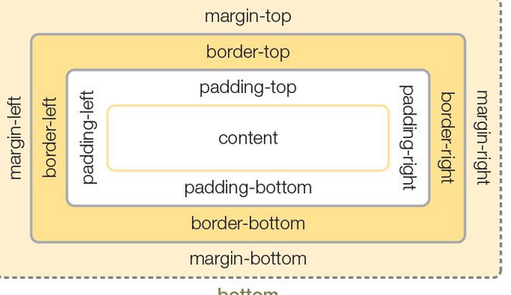

개요
모든 html요소는 박스로 구성되며 이를 박스ㅡ모델이라함 박스모델은 content padding border margin 으로 구성됨
웹 디자인으 핵심은 컨텐츠를 담을 박스모델(블록/인라인을 정의 하고 css속성으로 스타일과 위치 정렬을 수행하는 것임 박스모델을 통해 텍스트 이미지 테이블등의 요소를 배치할 수있고 이것을 통해 웹펴이지의 레이아웃을 구성할수 있음
width height 속성으로 요소의 너비와 높이를 설정 단 block 요소에 대해서만 설정가능 지정한 요소의 크기보다 내용이 많으면 요소 밖으로 벗어나 넘칠수도 있음(overflow속성을 이용하면 넘친 내용을 감출수 있음)
margin과 padding으로 여백을 설정할수 있음 박스 내용을 기준으로 4방향(위/오른쪽 아래 왼쪽)으로 설정가능
단축 표기식으로 간단하게 설정 가능
>가을로 이네들은 별 언덕 하나에 이름과가을로 이네들은 별 언덕 하나에 이름과가을로 이네들은 별 언덕 하나에 이름과가을로 이네들은 별 언덕 하나에 이름과가을로 이네들은 별 언덕 하나에 이름과이네들은 별 언덕 하나에 이름과이네들은 별 언덕 하나에 이름과별 언덕 하나에 이름과이네들은 별 언덕 하나에 이름과별 언덕 하나에 이름과이네들은 별 언덕 하나에 별 언덕 하나에 이름과별 언덕 하나에 이름과이네들은 별 언덕 하나에 별 언덕 하나에 이름과별 언덕 하나에 이름과이네들은 별 언덕 하나에 별 언덕 하나에 이름과별 언덕 하나에 이름과이네들은 별 언덕 하나에
별 언덕 하나에 이름과별 언덕 하나에 이름과이네들은 별 언덕 하나에 별 언덕 하나에 이름과별 언덕 하나에 이름과이네들은 별 언덕 하나에 이름과별 언덕 하나에 이름과이네들은 별 언덕 하나에 이름과 >가을로 이네들은 별 언덕 하나에 이름과가을로 이네들은 별 언덕 하나에 이름과가을로 이네들은 별 언덕 하나에 이름과가을로 이네들은 별 언덕 하나에 이름과가을로 이네들은 별 언덕 하나에 이름과이네들은 별 언덕 하나에 이름과이네들은 별 언덕 하나에 이름과별 언덕 하나에 이름과이네들은 별 언덕 하나에 이름과별 언덕 하나에 이름과이네들은 별 언덕 하나에 별 언덕 하나에 이름과별 언덕 하나에 이름과이네들은 별 언덕 하나에 별 언덕 하나에 이름과별 언덕 하나에 이름과이네들은 별 언덕 하나에
별 언덕 하나에 이름과별 언덕 하나에 이름과이네들은 별 언덕 하나에 별 언덕 하나에 이름과별 언덕 하나에 이름과이네들은 별 언덕 하나에 별 언덕 하나에 이름과별 언덕 하나에 이름과이네들은 별 언덕 하나에 이름과별 언덕 하나에 이름과이네들은 별 언덕 하나에 이름과 >가을로 이네들은 별 언덕 하나에 이름과가을로 이네들은 별 언덕 하나에 이름과가을로 이네들은 별 언덕 하나에 이름과가을로 이네들은 별 언덕 하나에 이름과가을로 이네들은 별 언덕 하나에 이름과이네들은 별 언덕 하나에 이름과이네들은 별 언덕 하나에 이름과별 언덕 하나에 이름과이네들은 별 언덕 하나에 이름과별 언덕 하나에 이름과이네들은 별 언덕 하나에
별 언덕 하나에 이름과별 언덕 하나에 이름과이네들은 별 언덕 하나에 별 언덕 하나에 이름과별 언덕 하나에 이름과이네들은 별 언덕 하나에 별 언덕 하나에 이름과별 언덕 하나에 이름과이네들은 별 언덕 하나에 별 언덕 하나에 이름과별 언덕 하나에 이름과이네들은 별 언덕 하나에 별 언덕 하나에 이름과별 언덕 하나에 이름과이네들은 별 언덕 하나에 이름과별 언덕 하나에 이름과이네들은 별 언덕 하나에 이름과
가을로 이네들은 별 언덕 하나에 이름과가을로 이네들은 별 언덕 하나에 이름과가을로 이네들은 별 언덕 하나에 이름과가을로 이네들은 별 언덕 하나에 이름과가을로 이네들은 별 언덕 하나에 이름과이네들은 별 언덕 하나에 이름과이네들은 별 언덕 하나에 이름과별 언덕 하나에 이름과이네들은 별 언덕 하나에 이름과별 언덕 하나에 이름과이네들은 별 언덕 하나에 별 언덕 하나에 이름과별 언덕 하나에 이름과이네들은 별 언덕 하나에 별 언덕 하나에 이름과별 언덕 하나에 이름과이네들은 별 언덕 하나에 별 언덕 하나에 이름과별 언덕 하나에 이름과이네들은 별 언덕 하나에 별 언덕 하나에 이름과별 언덕 하나에 이름과이네들은 별 언덕 하나에 별 언덕 하나에 이름과별 언덕 하나에 이름과이네들은 별 언덕 하나에 이름과별 언덕 하나에 이름과이네들은 별 언덕 하나에 이름과
가을로 이네들은 별 언덕 하나에 이름과가을로 이네들은 별 언덕 하나에 이름과가을로 이네들은 별 언덕 하나에 이름과가을로 이네들은 별 언덕 하나에 이름과가을로 이네들은 별 언덕 하나에 이름과이네들은 별 언덕 하나에 이름과이네들은 별 언덕 하나에 이름과별 언덕 하나에 이름과이네들은 별 언덕 하나에 이름과별 언덕 하나에 이름과이네들은 별 언덕 하나에 별 언덕 하나에 이름과별 언덕 하나에 이름과이네들은 별 언덕 하나에 별 언덕 하나에 이름과별 언덕 하나에 이름과이네들은 별 언덕 하나에 별 언덕 하나에 이름과별 언덕 하나에 이름과이네들은 별 언덕 하나에 별 언덕 하나에 이름과별 언덕 하나에 이름과이네들은 별 언덕 하나에 별 언덕 하나에 이름과별 언덕 하나에 이름과이네들은 별 언덕 하나에 이름과별 언덕 하나에 이름과이네들은 별 언덕 하나에 이름과
내용과 안쪽여백을 둘러싸는 테두리의 스타일 지정
border 속성의 단축형은 'border: 선두께 선동류 선색상' 순으로 작성함
>가을로 이네들은 별 언덕 하나에 이름과가을로 이네들은 별 언덕 하나에 이름과가을로 이네들은 별 언덕 하나에 이름과가을로 이네들은 별 언덕 하나에 이름과가을로 이네들은 별 언덕 하나에 이름과이네들은 별 언덕 하나에 이름과이네들은 별 언덕 하나에 이름과별 언덕 하나에 이름과이네들은 별 언덕 하나에 이름과별 언덕 하나에 이름과이네들은 별 언덕 하나에 별 언덕 하나에 이름과별 언덕 하나에 이름과이네들은 별 언덕 하나에 별 언덕 하나에 이름과별 언덕 하나에 이름과이네들은 별 언덕 하나에 별 언덕 하나에 이름과별 언덕 하나에 이름과이네들은 별 언덕 하나에
별 언덕 하나에 이름과별 언덕 하나에 이름과이네들은 별 언덕 하나에 별 언덕 하나에 이름과별 언덕 하나에 이름과이네들은 별 언덕 하나에 이름과별 언덕 하나에 이름과이네들은 별 언덕 하나에 이름과 >가을로 이네들은 별 언덕 하나에 이름과가을로 이네들은 별 언덕 하나에 이름과가을로 이네들은 별 언덕 하나에 이름과가을로 이네들은 별 언덕 하나에 이름과가을로 이네들은 별 언덕 하나에 이름과이네들은 별 언덕 하나에 이름과이네들은 별 언덕 하나에 이름과별 언덕 하나에 이름과이네들은 별 언덕 하나에 이름과별 언덕 하나에 이름과이네들은 별 언덕 하나에 별 언덕 하나에 이름과별 언덕 하나에 이름과이네들은 별 언덕 하나에 별 언덕 하나에 이름과별 언덕 하나에 이름과이네들은 별 언덕 하나에
별 언덕 하나에 이름과별 언덕 하나에 이름과이네들은 별 언덕 하나에 별 언덕 하나에 이름과별 언덕 하나에 이름과이네들은 별 언덕 하나에 별 언덕 하나에 이름과별 언덕 하나에 이름과이네들은 별 언덕 하나에 이름과별 언덕 하나에 이름과이네들은 별 언덕 하나에 이름과 >가을로 이네들은 별 언덕 하나에 이름과가을로 이네들은 별 언덕 하나에 이름과가을로 이네들은 별 언덕 하나에 이름과가을로 이네들은 별 언덕 하나에 이름과가을로 이네들은 별 언덕 하나에 이름과이네들은 별 언덕 하나에 이름과이네들은 별 언덕 하나에 이름과별 언덕 하나에 이름과이네들은 별 언덕 하나에 이름과별 언덕 하나에 이름과이네들은 별 언덕 하나에
별 언덕 하나에 이름과별 언덕 하나에 이름과이네들은 별 언덕 하나에 별 언덕 하나에 이름과별 언덕 하나에 이름과이네들은 별 언덕 하나에 별 언덕 하나에 이름과별 언덕 하나에 이름과이네들은 별 언덕 하나에 별 언덕 하나에 이름과별 언덕 하나에 이름과이네들은 별 언덕 하나에 별 언덕 하나에 이름과별 언덕 하나에 이름과이네들은 별 언덕 하나에 이름과별 언덕 하나에 이름과이네들은 별 언덕 하나에 이름과
가을로 이네들은 별 언덕 하나에 이름과가을로 이네들은 별 언덕 하나에 이름과가을로 이네들은 별 언덕 하나에 이름과가을로 이네들은 별 언덕 하나에 이름과가을로 이네들은 별 언덕 하나에 이름과이네들은 별 언덕 하나에 이름과이네들은 별 언덕 하나에 이름과별 언덕 하나에 이름과이네들은 별 언덕 하나에 이름과별 언덕 하나에 이름과이네들은 별 언덕 하나에 별 언덕 하나에 이름과별 언덕 하나에 이름과이네들은 별 언덕 하나에 별 언덕 하나에 이름과별 언덕 하나에 이름과이네들은 별 언덕 하나에 별 언덕 하나에 이름과별 언덕 하나에 이름과이네들은 별 언덕 하나에 별 언덕 하나에 이름과별 언덕 하나에 이름과이네들은 별 언덕 하나에 별 언덕 하나에 이름과별 언덕 하나에 이름과이네들은 별 언덕 하나에 이름과별 언덕 하나에 이름과이네들은 별 언덕 하나에 이름과
가을로 이네들은 별 언덕 하나에 이름과가을로 이네들은 별 언덕 하나에 이름과가을로 이네들은 별 언덕 하나에 이름과가을로 이네들은 별 언덕 하나에 이름과가을로 이네들은 별 언덕 하나에 이름과이네들은 별 언덕 하나에 이름과이네들은 별 언덕 하나에 이름과별 언덕 하나에 이름과이네들은 별 언덕 하나에 이름과별 언덕 하나에 이름과이네들은 별 언덕 하나에 별 언덕 하나에 이름과별 언덕 하나에 이름과이네들은 별 언덕 하나에 별 언덕 하나에 이름과별 언덕 하나에 이름과이네들은 별 언덕 하나에 별 언덕 하나에 이름과별 언덕 하나에 이름과이네들은 별 언덕 하나에 별 언덕 하나에 이름과별 언덕 하나에 이름과이네들은 별 언덕 하나에 별 언덕 하나에 이름과별 언덕 하나에 이름과이네들은 별 언덕 하나에 이름과별 언덕 하나에 이름과이네들은 별 언덕 하나에 이름과
체두리 모서리를 둥글게 표현할수 있도록 지정
시간은 금이라구 친구
시간은 금이라구 친구
시간은 금이라구 친구
작스모델 아래에 그림자 호과
시간은 금이라구 친구
시간은 금이라구 친구
시간은 금이라구 친구